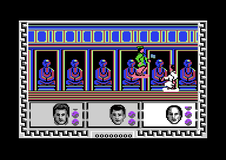

<meta charset="utf-8">
<meta name="viewport" content="width=device-width, initial-scale=1">
<title>{{title}} — gameplay</title>
<link rel="preconnect" href="https://fonts.googleapis.com">
<link rel="stylesheet" href="https://fonts.googleapis.com/css2?family=Lato:wght@400;700;900&family=IBM+Plex+Mono:wght@400;500&display=swap">
<link rel="stylesheet" href="reference/btilc-page.css">
<style>
.bt-cast{display:grid;grid-template-columns:repeat(auto-fill,minmax(min(130px,100%),1fr));gap:14px;margin:0 0 18px}
.bt-cast figure{margin:0}
.bt-cast canvas{display:block;background:#000;border-radius:4px;image-rendering:pixelated;width:100%;height:auto}
.bt-cast figcaption{font-size:13px;color:var(--ink-mute);margin-top:4px}
</style>
<!-- tabs -->
<header class="hero">
  <p class="eyebrow">{{platform}} · {{year}} · {{publisher}}</p>
  <h1>{{title}}</h1>
  <p class="sub">Three heroes walk one street together, one enemy at a time comes for them, and their energy runs down whether they fight or not.</p>
</header>
<main class="wrap">
<section id="heroes">
  <p class="fig">01 · The heroes</p>
  <h2 class="t">Three heroes, one in charge</h2>
  <p class="lede">You lead Jack Burton, Wang Chi and Egg Shen along the street from right to left. One of them is the active hero, lit in the panel; the other two walk behind him and take no part in a fight.</p>
  <div class="bt-cast" id="bt-heroes"></div>
  <p>Walking moves all three together (<code>walk_left</code>, <code>$1453</code>), and while no enemy is on the screen the street scrolls with them. You can change the active hero at any time with <a href="controls.html#keys">B, C or S</a>, or pass to the next living one with RETURN (<code>switch_hero</code>, <code>$1469</code>). The new hero swaps places with the old, and the portrait's light moves with him (<code>highlight_portrait</code>, <code>$22FB</code>).</p>
  <p>Each fights his own way. Jack shoots, but only while he has <a href="#bonuses">his gun's bonus</a>. Wang Chi kicks, rolls and slashes, and his sword strokes also need his bonus. Egg Shen never fights hand to hand: the blow test skips him (<code>hero_blow</code>, <code>$1EF1</code>), and he throws his magic instead.</p>
</section>

<section id="enemies">
  <p class="fig">02 · The enemies</p>
  <h2 class="t">One enemy at a time, chosen by where you are</h2>
  <p class="lede">Only one enemy is ever on the street. When one has gone, the next comes in from the left after a delay, and which kind comes depends on how far along the street you are (<code>enemy_control</code>, <code>$127A</code>).</p>
  <div class="bt-cast" id="bt-enemies"></div>
  <div class="table-scroll" role="region" aria-label="The enemy kinds" tabindex="0"><table class="t">
    <tr><th>Kind</th><th>Looks</th><th class="n">Blows to fell</th><th class="n">Its blows per energy point lost</th><th class="n">Points</th><th>Throws</th></tr>
    <tr><td>3</td><td>a fighter, blue</td><td class="n">8</td><td class="n">6</td><td class="n">100</td><td>no</td></tr>
    <tr><td>4</td><td>with a gun, yellow</td><td class="n">10</td><td class="n">4</td><td class="n">400</td><td>yes</td></tr>
    <tr><td>5</td><td>with a sword, green</td><td class="n">8</td><td class="n">4</td><td class="n">200</td><td>no</td></tr>
    <tr><td>6</td><td>in a broad hat, light grey</td><td class="n">16</td><td class="n">4</td><td class="n">2,000</td><td>no</td></tr>
    <tr><td>7</td><td>a hat and a gun, white</td><td class="n">16</td><td class="n">2</td><td class="n">2,000</td><td>yes</td></tr>
    <tr><td>8</td><td>a hat and a sword, yellow</td><td class="n">16</td><td class="n">2</td><td class="n">2,000</td><td>no</td></tr>
    <tr><td>9</td><td>Lo Pan, green</td><td class="n">20</td><td class="n">1</td><td class="n">10,000</td><td>yes</td></tr>
  </table></div>
  <p class="cap">From the kinds table (<code>enemy_kinds</code>, <code>$1201</code>), the throwers' test (<code>$24E7</code>) and the points table (<code>points_table</code>, <code>$260F</code>). The colour names are the C64's palette's.</p>
  <p>The street is cut into 12 sections of 150 columns, counted from the start. Each has a delay and a list of four kinds, and the game picks one of the four at random (<code>spawn_lists</code>, <code>$122C</code>). The first four sections bring only fighters and the odd gunman or swordsman, with a delay of about 14 seconds after an enemy goes; the last bring the men in hats, with a delay of under 3 seconds. The <a href="levels.html#map">Maps page</a> marks where each section begins.</p>
  <p>When an enemy appears the heroes regroup: the controls stop answering while the active hero walks to his fighting place near the right of the screen and the other two line up behind him (<code>regroup</code>, <code>$1D76</code>). They do it again when the enemy has gone.</p>
</section>

<section id="fighting">
  <p class="fig">03 · Fighting</p>
  <h2 class="t">A blow lands on one frame, at one point</h2>
  <p class="lede">A blow counts only when the move is one of the hero's blows, the animation has reached the frame on which that blow lands, and the point the hero strikes with falls inside the enemy's body (<code>hero_blow</code>, <code>$1EF1</code>).</p>
  <p>Every figure has a body box for each frame (<code>boxes</code>, <code>$0F17</code>) and every blow a striking point (<code>strike_points</code>, <code>$1005</code>), so a kick aimed too high or thrown from too far misses even when the pictures seem to touch. Each blow that lands plays sound 4 and adds one to the enemy's count; it falls when the count passes its kind's figure. The enemy's blows on the active hero work the same way (<code>enemy_blow</code>, <code>$290A</code>), and every few of them cost him a point of energy.</p>
  <p>An enemy you beat falls and vanishes, and its points are added. One that gets past the heroes and walks off the right of the screen <a href="discoveries.html#lost">takes its points away instead</a>.</p>
</section>

<section id="energy">
  <p class="fig">04 · Energy</p>
  <h2 class="t">Energy that runs down on its own</h2>
  <p class="lede">Each hero has 41 points of energy, drawn as a bar beside his portrait. Blows take it away, and so does time: a point goes every 512 game loops, about every 50 seconds, whatever the hero is doing (<code>tick_energy</code>, <code>$23F6</code>).</p>
  <p>All three heroes' energy runs down at once, the two who are only following too. A hero whose energy reaches 0 falls and stays down (<code>hero_dies</code>, <code>$2419</code>), and the active hero passes to the next living one. When all three have fallen, the game is over.</p>
</section>

<section id="bonuses">
  <p class="fig">05 · Bonuses</p>
  <h2 class="t">The score pays for weapons, strength and food</h2>
  <p class="lede">Bonuses are not found on the street: the score brings them. Each time it passes a threshold, a bonus appears at the left of the view, and the active hero takes it by walking into it (<code>place_bonus</code>, <code>$26C6</code>; <code>bonus_update</code>, <code>$21BA</code>).</p>
  <div class="table-scroll" role="region" aria-label="The bonuses" tabindex="0"><table class="t">
    <tr><th>Every</th><th>Bonus</th><th>Who gets it</th><th>What it does</th></tr>
    <tr><td>1,000 points</td><td>a weapon: Jack's gun, Wang Chi's sword or Egg Shen's potion</td><td>the active hero, or the next living one without his weapon</td><td>20 uses; lights the weapon box beside the portrait</td></tr>
    <tr><td>1,500 points</td><td>food</td><td>the active hero, if his energy is below 25</td><td>fills his energy to 41</td></tr>
    <tr><td>3,000 points</td><td>a strength potion</td><td>the active hero, if he has none</td><td>for 20 blows, each blow counts twice</td></tr>
  </table></div>
  <p class="cap">From <code>bonus_thresholds</code> (<code>$2603</code>) and <code>check_threshold</code> (<code>$2716</code>). The thresholds move on by the same step each time one is passed.</p>
  <p>Egg Shen can throw his magic without his potion, but then each throw that hits counts as one blow; with the potion, a hit fells the enemy at once, as Jack's bullets do (<code>shot_hits_enemy</code>, <code>$29D2</code>).</p>
</section>

<section id="monsters">
  <p class="fig">06 · The sewers</p>
  <h2 class="t">The sewer monsters</h2>
  <p class="lede">In the sewers, at 16 places (<code>hazard_x</code>, <code>$20B2</code>), a monster's face rises from the floor as the active hero comes within 16 pixels of it. It cannot be fought. It hurts him, two points of energy, in two of its eight frames, at the top of its rise (<code>items_update</code>, <code>$20D2</code>).</p>
  <p>The monster is <a href="graphics.html#shapes">painted into the street's picture</a>, not drawn with sprites, and the <a href="levels.html#map">Maps page</a> marks its 16 places.</p>
</section>

<section id="end">
  <p class="fig">07 · The end</p>
  <h2 class="t">Lo Pan, and a prize you have to earn</h2>
  <p class="lede">The last 60 columns of the street are the boss's stretch. There the enemy is always Lo Pan: he appears out of the air, floats back and forth above the heroes and throws at them (<code>boss_appear</code>, <code>$1372</code>; <code>enemy_think</code>, <code>$1C43</code>).</p>
  <figure class="overview-shot"><figcaption>The temple at the end of the street, where Lo Pan floats over the heroes.</figcaption></figure>
  <p>Each blow on Lo Pan is counted (<code>boss_hits</code>, <code>$1EED</code>). Near the street's end, once he has had ten, the prize appears, and the hero who takes it wins the game (<code>$21DB</code>). What the game does then is <a href="discoveries.html#win">one of its surprises</a>.</p>
</section>
</main>
<script src="../../lib/c64.js"></script>
<script src="reference/btilc.js"></script>
<script>
(function () {
  if (typeof C64 === 'undefined' || typeof BTILC === 'undefined') { document.getElementById('bt-heroes').textContent = 'The figures need the site\'s shared scripts: open the page from the built site.'; return; }
  BTILC.load().then(L => {
    const m = L.ram, types = BTILC.figureTypes(m);
    function cast(id, list) {
      const box = document.getElementById(id);
      for (const t of list) {
        const T = types[t], f = document.createElement('figure'), c = document.createElement('canvas');
        c.width = 56 * 2; c.height = 60 * 2; c.setAttribute('aria-label', T.name);
        BTILC.drawFigure(c.getContext('2d'), m, T.recs[t >= 3 && t <= 8 ? 4 : 0], BTILC.figureColour(m, t), 8, 4, 2);
        const cap = document.createElement('figcaption'); cap.textContent = T.name;
        f.append(c, cap); box.append(f);
      }
    }
    cast('bt-heroes', [0, 1, 2]);
    cast('bt-enemies', [3, 4, 5, 6, 7, 8, 9]);
  });
})();
</script>
